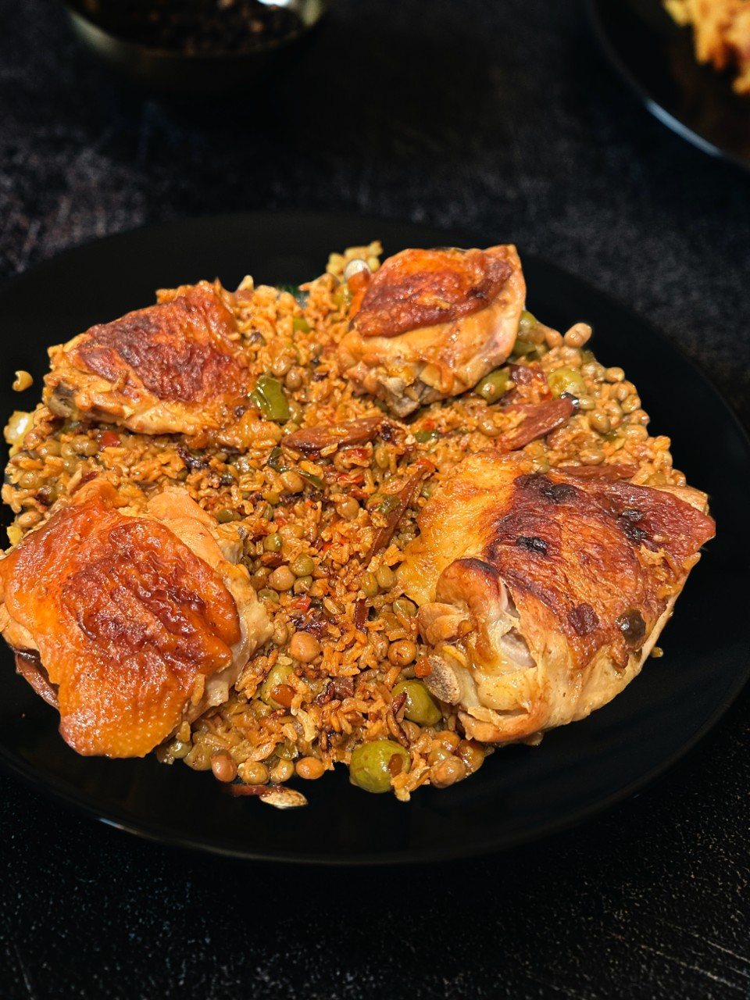

Arroz con Pollo

Description
This simple recipe is inspired by the food my parents made growing up. My favorite
part of this meal is that every bite is like its own flavorful surprise. I've
made many variations of this dish and I hope you experiment with and enjoy it
as much as I do.
Ingredients
- Sofrito:
- Onion
- Green pepper
- Red pepper
- Garlic
- Olives
- Gandules (Pidgeon peas)
- Rice
- Chicken (I prefer thigh)
- Spanish chorizo
- Sazon
- Chicken Bouillon
Directions
- Season chicken and roast in air fryer or sautee in sofrito
- Finely dice the sofrito or use a food processor to combine
- Slice the chorizo into medallions and throw into cold pan on medium
- Render fat from the chorizo until lightly crispy then remove
- Satuee the sofrito in the rendered fat (Do not caramelize!)
- Add oil if necessary to prevent burning
- Add the garlic and continue sauteeing until fragrant
- Add the remaining ingredients
- Bring the pot to a heavy boil then cover and simmer on low for 20m
- Remove from heat and let sit for additional 10m then enjoy
Home